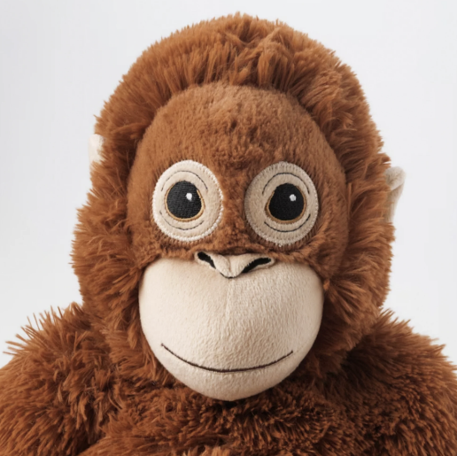

Orangutan
Orangutans are great apes native
to the rainforests of Indonesia and Malaysia.
They are now found only in parts of Borneo and Sumatra,
but during the Pleistocene they ranged
throughout Southeast Asia and South China.
Classified in the genus Pongo,
orangutans were originally considered to be one species.
From 1996, they were divided into two species:
the Bornean orangutan (P. pygmaeus, with three subspecies)
and the Sumatran orangutan (P. abelii).
A third species, the Tapanuli orangutan (P. tapanuliensis),
was identified definitively in 2017.
The orangutans are the only surviving species of the subfamily
Ponginae,
which diverged genetically from the
other hominids (gorillas, chimpanzees, and humans)
between 19.3 and 15.7 million years ago.
https://en.wikipedia.org/wiki/Orangutan